Comparative Analysis of Music Aptitude and Academic Achievement
LinkedIn Article here
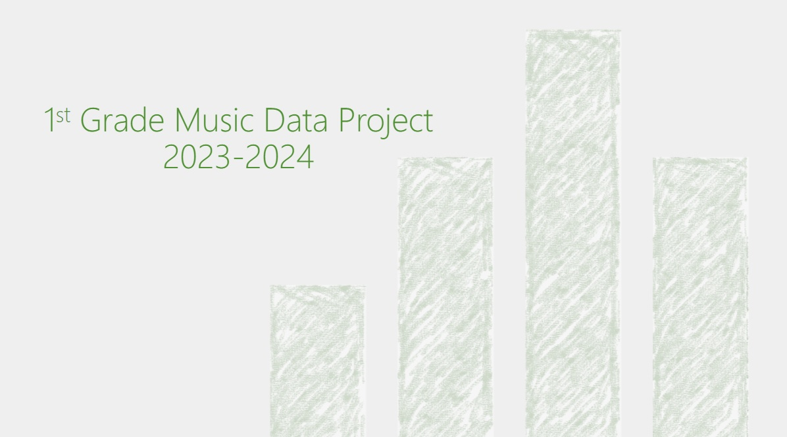
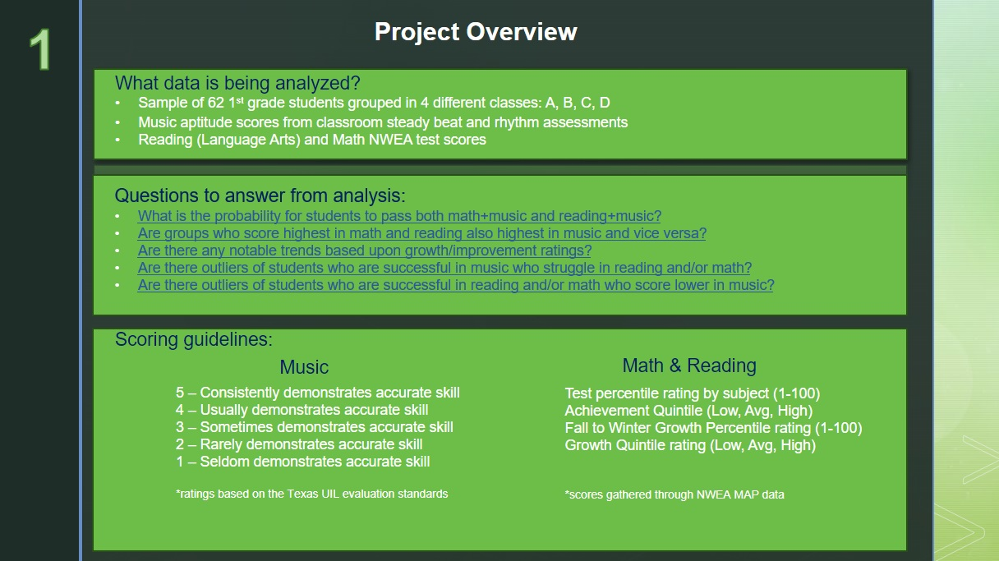
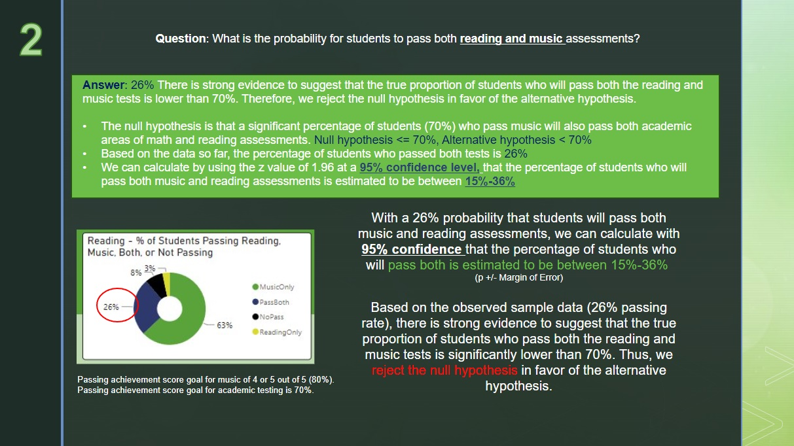
My hypothesis was there would a significant percentage of 70% or more students passing both music and either math or reading.
I was surprised this was only true for 26% of students who passed reading and music!
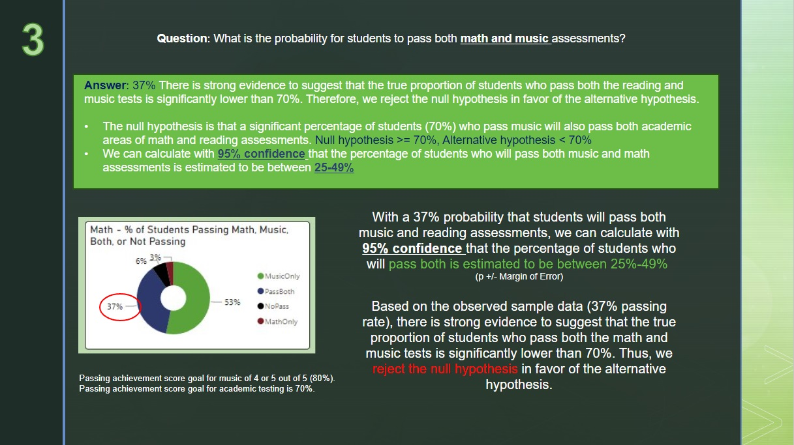
37% of students passed math and music. A little more than compared to the reading assessment,
but still not nearly what I had expected.
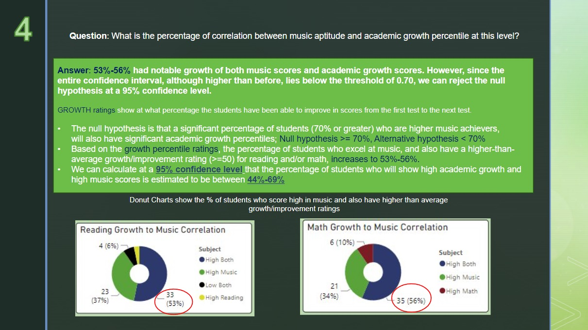
The NWEA MAP tests also calculate growth from one test to the next. I expected 70% or more students to have high music
achievement and significant growth (50% or greater). Only 53%-56% of students were in this category.
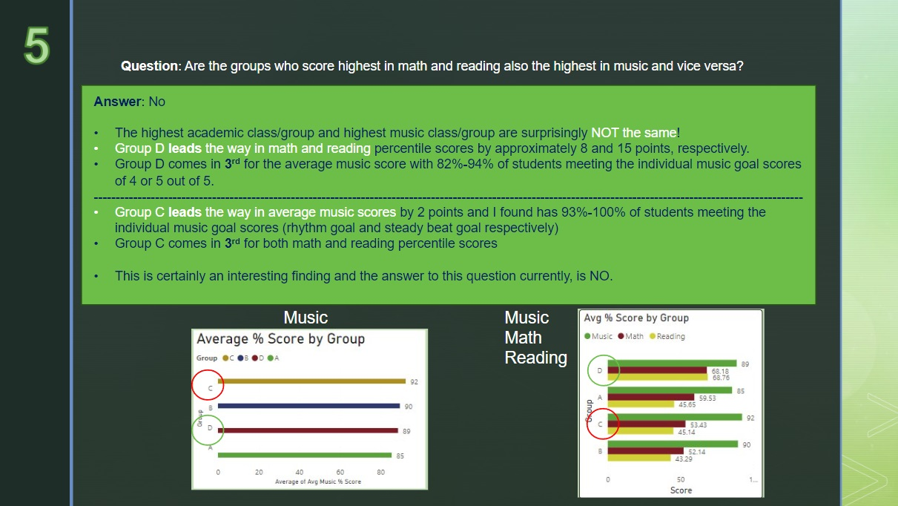
Group D led the way in math and reading scores, but was 3rd in music. Group C led music, but was 3rd in math and reading.
This for sure was not what we were expecting to see!
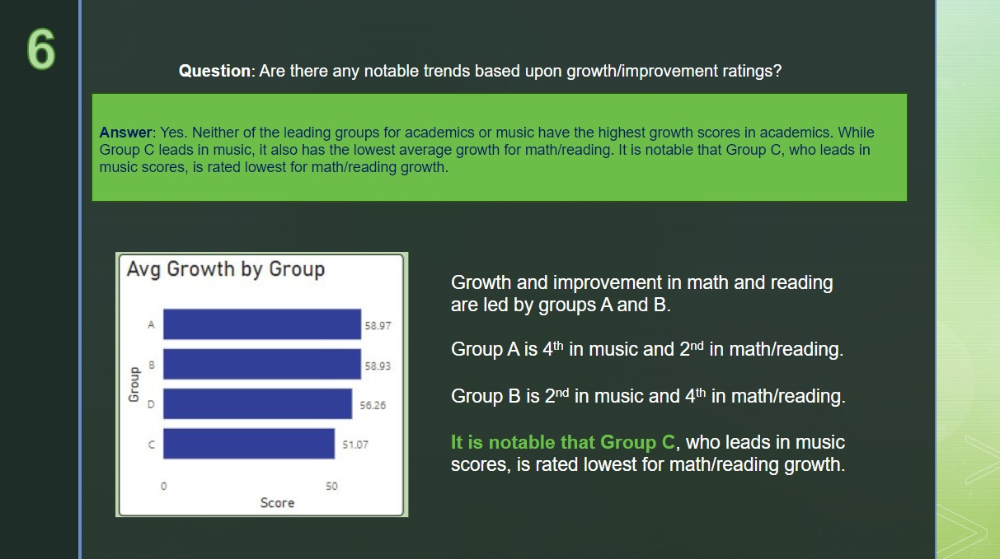
While all classes achieved significant growth averages (50% or more), it is notable that Group C, who led the way for music scores,
also had the lowest rating for math and reading growth.
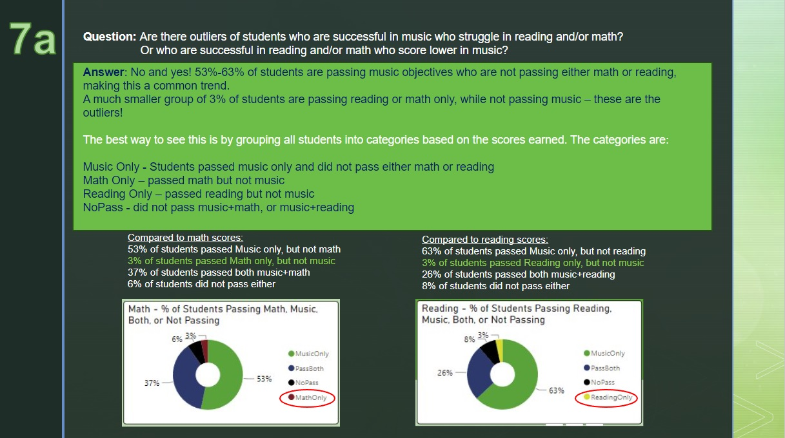
3% of students are passing reading or math only, while not passing music - these are the outliers
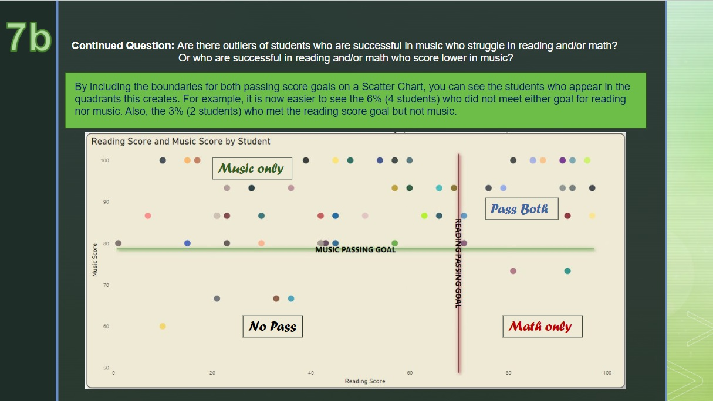
In this scatter plot view, it is easier to see the quadrants of the categories, including the 4 students (6%)
who did not pass either reading or music, and the 2 students (3%) who met the reading goal but not music.
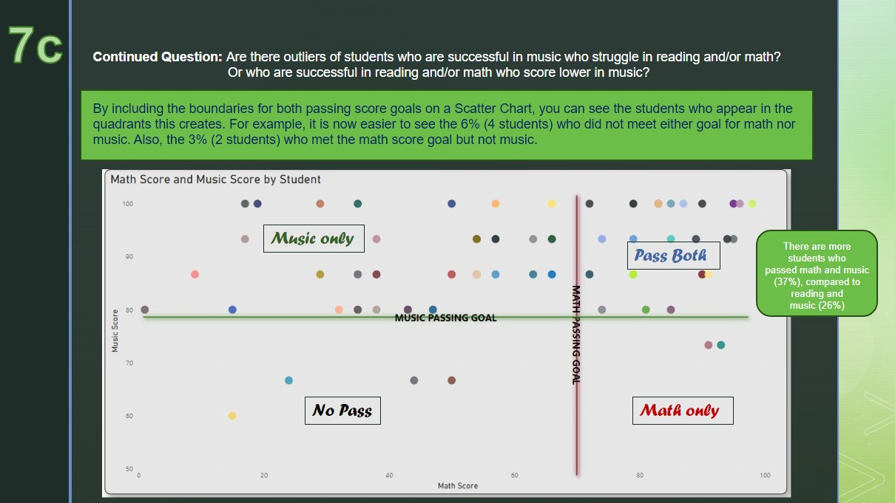
In this scatter plot view, it is easier to see the quadrants of the categories,
and how there are clearly more students who passed math and music (37%), compared to reading and music (26%).
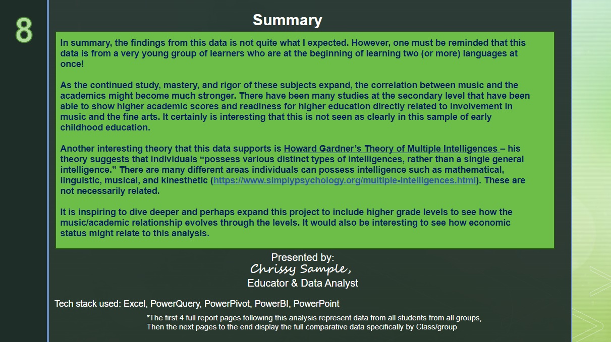
Following are screenshots of the dynamic dashboards created in PowerBI to analyze this project.
Multiple spreadsheets were cleaned and merged with Power Query, where I then created calculated columns and measures to further analyze
the information to answer the questions we had.
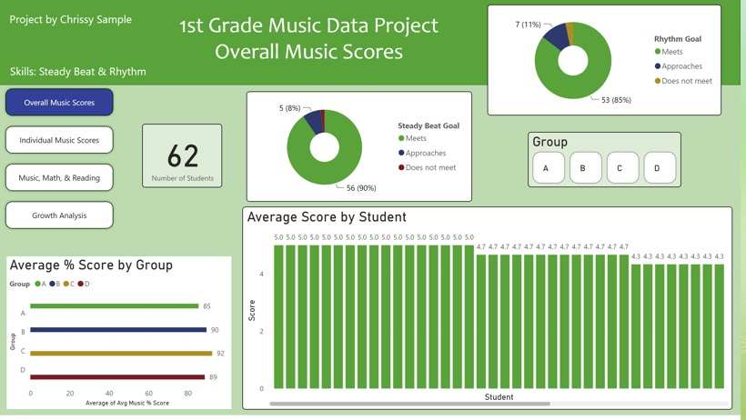
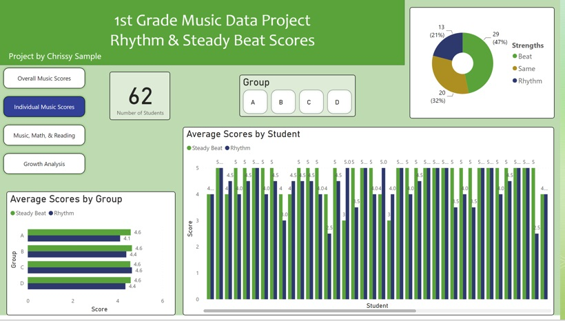
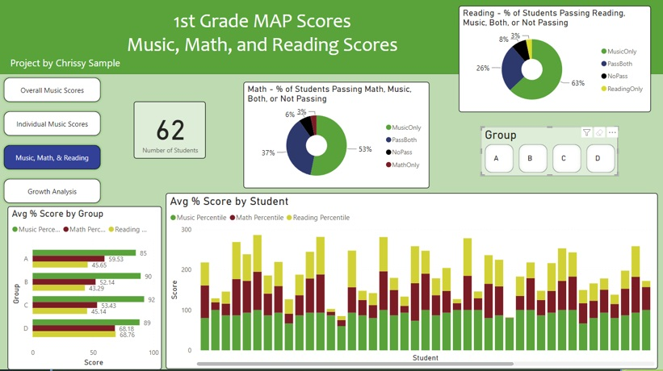
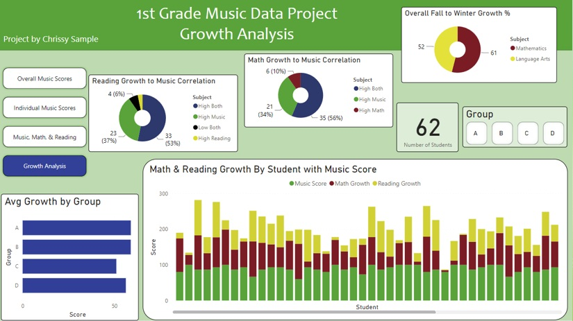